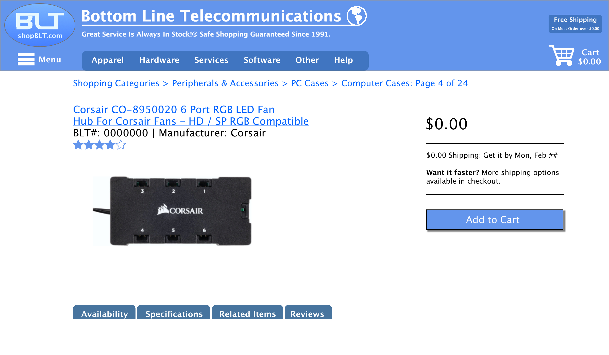
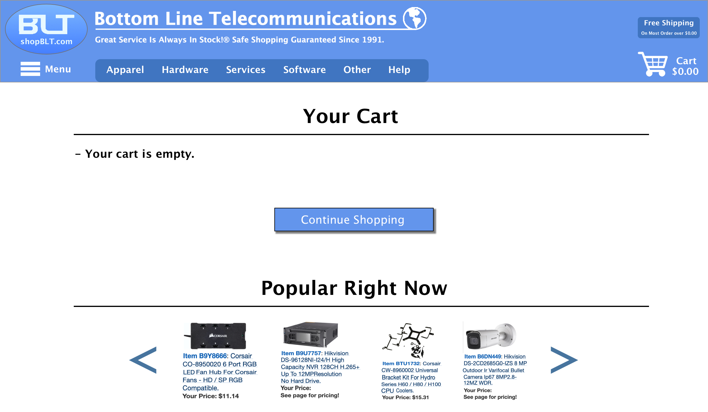
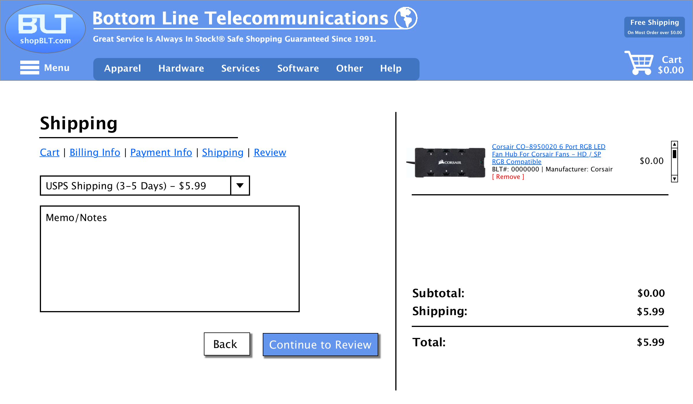
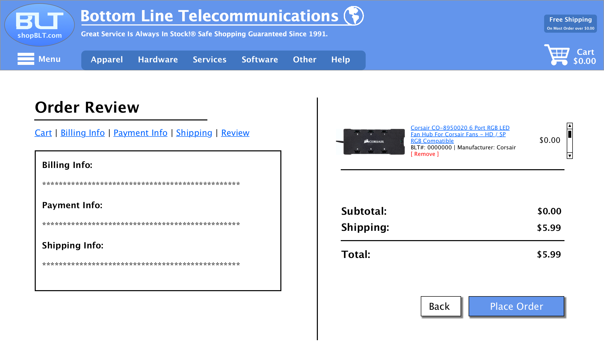
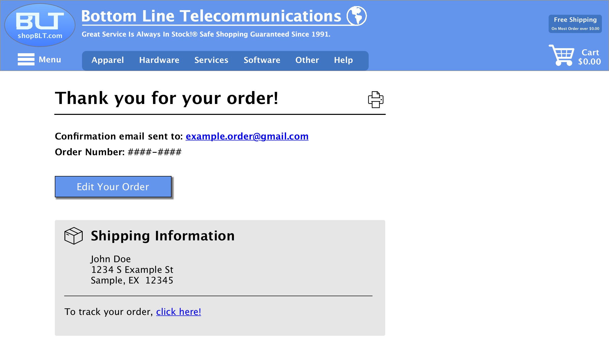

Team
5 students
My Roles
Research, interviews, sketches,
wireframes, prototype
Timeline
10 weeks
Deliverables
Competitive analysis, surveys,
interviews, sketches,
wireframes, prototypes
Tools
Sketch, Balsamiq Mockups,
Google Forms, pen & paper
Overview
Redesigning some main aspects of BottomLineTelecommunications (BLT) to improve the online purchasing experience.
Working in a team, we sought out to navigate through different pages of the website and discover pain points that a user might encounter. Using the website as is, and being mindful of familiarity for returning customers, our team focused on efficiency and ease-of-use.
The Problem
BottomLineTelecommunications is an e-commerce website that provides its customers with over 300,000 hardware and software solutions manufacturers all over the world. However, the latest incarnation of its website feels outdated and user-unfriendly.
The Solution
Navigate through BottomLineTelecommunications and figure out which aspects influence the purchasing experience the most. In other words, which pages would users most benefit from a redesign. After conducting some research, we discovered the pages and concepts were:
- Customer support and contact information page
- Product discovery (homepage, search listings) page
- Product filtering
- Product check out
- Search bar
1. User Research
To fully uncover the usability issues of the website, we conducted several research methods. Each method, as we studied along, revealed crucial insights about the website:
- Competitive analysis - allowed for us to get a sense of who the site's competitors were, both on and offline.
- Personas - went further into the website user base and specify three different kinds of customers.
- Surveys - had five broad objectives in mind, to determine the preferences customers had.
- Interviews - go further into the preferences of users and discover a more personal touch to online purchasing.
2. Data Analysis
Survey & Interview insights:
When it came to hardware purchases, there was a convenience factor for people to shop in-store rather than online, due to frustration from the process of online shopping. People occasionally have difficulty finding product online and product research was crucial to them. Therefore product results were the make-or-break point for people. A good search bar formula would be beneficial towards a more user-friendly consumer products site.
3. Sketches
Using a whiteboard and a marker, we worked collaboratively to approach different design ideas based on the five pages mentioned in "The Solution" section. This helped us mix-and-match different ideas and allowed us to work much faster.


4. Low-Fidelity
Wireframes
From the sketches, we each assigned one another a page to create a low-fidelity wireframe for. Using Balsamiq Mockups, I created a wireframe for the Product Filtering menu.
Customer Support Page

Product Discovery Page

Product Listings Page

Product Filtering Menu

5. High-Fidelity
Wireframes
After the project class was over, I went back and created high-fidelity wireframes of all the low-fidelity ones, using Sketch. I also decided to incorporate my own additional pages that I believe would help the overall experience of the site, given it's an e-commerce website; those pages will be featured in the "Additional" section of the page. Creating all these wireframes allowed me to further advance my skills with Sketch, as well as experiment more with its basic prototyping tools.
Customer Support Page
Product Discovery Page
Product Listings Page

Product Checkout Page 1
Product Checkout Page 2

Product Checkout Page 3
Product Filtering Menu

Additional
The following high-fidelity wireframes are the additional pages I created on Sketch. These pages were created after the project course was over. Much of the inspiration from these pages comes from one of BottomLineTelecommunications's competitors, Best Buy. I chose to follow a similar design concept as to theirs because it's good to use design solutions that you know work. Best Buy is a large and successful company, and using their website was easy; they had good and straightforward functionalities.
Single Product Listing Page
Empty Cart Page
Product Checkout Page 4
Product Checkout Page 5
Order Confirmation Page
Edit Order Page

Takeaways
This was my first HCI project, but my second project course. Comparing it to my first, I definitely did a lot more research and contributed to a lot more design concepts. It all came down to gaining more experience with working in a group and learning the different methods of research we must conduct in order to get the data we need.
In the future, I would like to take this project further and create a functional prototype using Axure. Also if time allows it, I would like to use Sketch to make a complete mobile version of the website. I would conduct more interviews and maybe even try some different testing, like A/B testing, to get richer feedback. Given that we are increasingly growing into a tech-based world, it's important that we consider making tech services more efficient for users.